Inhoudsopgave
Utriusque cosmi ... historia Inhoudsopgave
Utriusque cosmi ... historia Besluit
Besluit
De musica mundana
In het middelpunt van Robert Fludd’s opvattingen over
de musica mundana in UCH staat het ‘Wereld-monochord’
(Monochordum mundanum - zie afbeelding 10). Helaas is er nergens sprake
van een bijbehorende ‘wereld-muziek’: een accoord, of accoorden
(zoals bij Johannes Kepler), een cadens (zoals bij Athanasius Kircher), of
zelfs, hetgeen gezien de aard van het monochord te verwachten zou zijn, een
éénstemmige melodie.
In zijn behandeling van de musica mundana
(UCH. I, i. III) gebruikt Fludd de muziek als metafoor voor harmonie,
voor de wel-geordendheid van de schepping door God, maar hij geeft helaas geen
voorbeelden van bepaalde muziek die representatief zou zijn voor die
wel-geordendheid.
Aan de hand van het monochordum mundanum kan
alleen een toonladder worden afgeleid, die qua omvang en betekenis overeenkomt
met de toonladder van het lied Naturalis concordia vocum cum planetis.
Overigens, de verdeling van de snaar op dit monochord is onjuist: kwinten,
kwarten en losse tonen zijn willekeurig op het monochord aangebracht. Toch
schuilt er een bepaald idee achter, de lagere wereld met haar verhoudingen
(hoewel deze onjuist zijn en blijven) is namelijk een spiegeling van de hogere
op het middelpunt, de zon of ‘sphaera equalitatis’(1) (mogelijkerwijs indachtig het
hermetische credo ‘zo boven, zo beneden’).
Ik zal in het nu volgende gedeelte het zojuist genoemde
‘Wereld-monochord’ behandelen, om aan de hand daarvan een
uitgebreider begrip van Fludd’s opvattingen te ontwikkelen.
I
| 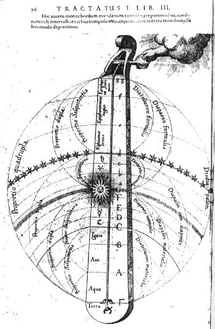afb. 10
‘Monochord' UCH I,i. p. 90 | | Op de afbeelding (10) ziet
men rechts boven een hand uit een wolkje tevoorschijn komen, welke het
monochord lijkt te stemmen. Dit nu is God, door Fludd ook anima mundi(2), wezenlijk licht (lux
essentifica) of pulsator Monochordii(3) genoemd: ‘... de verhoudingen
van de dingen laten de zeer nobele ‘Wereld-harmonie’ ontstaan,
omdat de voorteffelijkheid van het Eerste licht op de materie in het midden (de
macrocosmos) inwerkt, waardoor de onontbindbare eendracht van de dingen tot
stand wordt gebracht en evenzo worden (onze) intellectuele oren gestreeld door
een zekere onverklaarbare muziek. Want het instrument van deze melodie, de
‘Wereld-machine’, is zoals een monochord, waarvan de snaar,
waardoor de samenklank van de delen ontstaat, de materie in het midden van de
gehele wereld is. De muzikant van deze muziek is de ‘ziel van de
wereld’ of het Wezenlijk licht.‘ ((...) harmoniam mundanam
perquam nobilem illae rerum proportiones inducunt, per quas operante in
materiam intermediam lucis primariae virtute, indissolubilis rerum concordia
conciliatur, ac musica quadam inexplicabili aures intellectus permulcentur.
Hujus namque melodiae instrumentum, machina scilicet mundi, est quasi
monochordum, cujus chorda, per quam consensus partium introducitur, est
intermedia totius mundi materia. Autor autem in hac musica existit mundi anima
seu lux essentifica (...).(4)). |
Uit dit citaat komt, behalve dat de musica mundana
niet reëel is, maar slechts voor onze ‘intellectuele oren‘
grijpbaar(5) en dat het instrument van
deze muziek ‘als een monochord’ is, ook een ander punt naar voren:
enerzijds is er de snaar, welke de materie representeert; anderzijds is er God,
die noodzakelijk is als bespeler van het monochord.(6) Deze tweedeling is ook meer nadrukkelijk door Fludd
neergeschreven:
‘Omdat al deze verhoudingen op de twee voornoemde
mogelijke pyramiden niet in staat zijn om de muzikale consonanten te
produceren, zonder een vermenging van beide (want een luit zonder bespeler of
een bespeler zonder luit is niet voldoende om muziek te maken), daarom moeten
beide pyramiden noodzakerlijkerwijs samengaan om de
‘Wereld-harmonie’ tot stand te brengen. Namelijk zowel de
materiële (pyramide), die in de plaats komt van het muziek-instrument, of
van de snaar van het monochord, of van het zingen van de stem en het
instrument; als ook de formele (pyramide), die de taak van de ziel vervult, die
aanslaat of zingt en de stem produceert.’ (Quoniam omnes istae
proportiones in qualibet praedicta pyramide per se nihil valent ad producendas
consonantias musicas sine utriusque commixtione (neque enim barbiton sine
musico, nec musicus sine barbiton ad consonantias musicas faciendas sufficit)
idcirco necessario concurrere debent ad hamoniam mundanam constituendam
pyramides utraeque, tum scilicet materialis, quae loco instrumenti musici, seu
chordae monochordi, aut instrumenti et spiritus canentis est, tum etiam
formalis, quae officium animae pulsantis vel canentis vocisque producentis
praestat.(7)).
De pyramides, waarvan in dit citaat spake is, vormen een
centrale ‘leerstelling’ in Fludd’s opvattingen over de
wereld. Deze pyramides(8) (zie afbeelding 11 en 12), waarvan het monochord in feite dus een
speciale vorm is (een toepassing), beelden de structuur van de door God
geschapen wereld uit.(9)
Over de schepping en het probleem ‘creatio ex
nihilo’ is Fludd nogal diplomatiek: hij zegt namelijk dat hieromtrent een
geweldige strijd tussen recente filosofen is ontstaan: enerzijds zijn er
diegenen die menen dat God alles bij het eerste begin schiep (dus ook de
oerstof, dat wat de filosofen volgens Fludd hulê noemen(10), waaruit later alles gevormd werd -
vgl Genesis 1). God schiep met zijn woord (Joh. 1:1, In principio erat
Verbum) dus zowel forma, de vorm waaruit iets bestaat, als
materia, waarvan het gemaakt is. Anderzijds noemt Fludd Paracelsus als
voorbeeld van de filosofen die de creatie mysterium magnum noemen (en
daarmee het hele probleem van wat voor de schepping was en dus het probleem van
de ‘schepping uit het niets’, vermijden).(11) Maar omdat dit zulke moeilijke materie is, zegt Fludd(12), wil hij het daarbij laten en
vervolgt hij met een verhaal over de wijze waarop uit de oerstof de schepping
ontstond (conform Genesis 1: fiat lux etc.). Fludd begint met zijn
scheppingsverhaal op het moment ‘dat de duisternis op de vloed (de
hulê in Fludd’s ogen) lag en de Geest Gods over de wateren
zweefde.’(13)
In de eenmaal
geschapen wereld zijn twee principes aanwezig: licht en duisternis, welke
gerepresenteerd worden door de twee pyramides (zie afbeelding 11
en 12). De ene pyramide heeft zijn basis vlak bij God en zijn punt tot aan
de donkere aarde, deze representeert de emanatie van licht, of forma
genaamd, ‘naar beneden’; de andere pyramide heeft zijn basis in de
donkere aarde en zijn punt tot aan de bovenste grens van het Empyreum en
representeert duisternis, of materia, welke ‘naar boven’ is
gericht.(14) De beide pyramides
representeren de wederkerige en hiërarchische vermeerdering en
vermindering van vorm en materie waaruit de kosmos bestaat:
‘... dat alles tussen de grenzen van de aarde en de
periferie van het Empyreum zijn verhoudingen heeft ontvangen van de
actio en passio van deze twee pyramiden; en daaruit worden ook
alle verhoudingen van de Macrocosmos en de samenklanken, waaruit de
‘Wereld-harmonie’ bestaat, afgeleid.’ ((...) omnia inter
terrae margines et summam coeli Empyrei peripheriam accepisse proportiones suas
a duarum harum pyramidum actione et passione; ex quibus etiam omnes Macrocosmi
proportiones et consonantiae harmoniam mundanam constituentes derivantur.(15)).
De pyramides zijn in elkaar geprojecteerd om de wederzijdse
afhankelijkheid te demonstreren (geen vorm zonder materie en andersom: Nam
sine lucis praesentia non haberet materia humida formam pyramidalem, nec forma
creata suam absque materia humida.(16)).
God bevindt zich op het eerste gezicht buiten
deze toe- en afnemende materialisering, hetgeen ook uit de hand in de
afbeelding (10) zou blijken. Deze bevindt zich namelijk buiten de schepping, in
een wolkje (maar zie ook afbeelding 7, waar God’s hand, eveneens reikend
uit een wolk, Natura leidt en deze weer op haar beurt de mens). De
afbeelding gaat vergezeld van volgende tekst: ‘Hier hebben wij het
’Wereld-monochord weergegeven, met zijn verhoudingen, consonanten en
intervallen op de juiste wijze aangebracht (!), waarvan de beweger buiten de
wereld is’ (zie afbeelding 10).
| 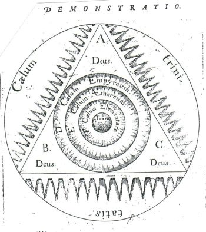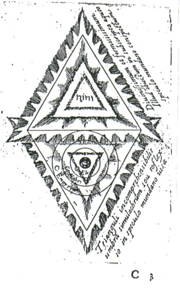afb. 13a/b ‘Driehoeken'UCH I,i. p. 20 en
21 | | Toch
is God voor Fludd in de schepping meer aanwezig, dan uit de afbeeldingen zou
blijken; want niet alleen omvat God de wereld (zie afbeelding 13a) of is de
wereld een schaduw van de geest Gods (zie afbeelding 13b) - twee punten waaruit
al een directe betrokkenheid van God met zijn schepping blijkt(17), - maar God is volgens Fludd ook in
de wereld aanwezig. |
God is tegelijkertijd transcendent en immanent; transcendent
omdat hij van ‘buiten’ de wereld bestuurt, immanent omdat hij door
middel van de lichtpyramide zijn schepping van zichzelf doordringt. Enerzijds
is er de passieve materie (echter wel door God geschapen), weergegeven door de
materiële pyramide, anderzijds is er Gods aanwezigheid, weergegeven door
de lichtpyramide.
In feite is dit een vorm van pantheisme, namelijk die vorm
ervan die ‘emanatie-pantheisme’ wordt genoemd: ‘(Dit) laat
het bestaan uit de volheid der volmaakte Godheid (plèroma) voortvloeien,
echter zo, dat de concrete dingen als hoe langer hoe meer òn-volkomen
worden beschouwd, naar gelang hun afstand van de Godheid (Gnosis, Plotinus, en
later Scotus Erigena).’(18)
Dit pantheisme wordt door Fludd ook geformuleerd in UCH, namelijk daar
waar hij over God spreekt als ‘alles in alles’.(19) Na een uiteenzetting over wat God
nu is (‘eeuwig’, de ‘alleroudste’, de ‘oneindige
oorzaak’ etc.), stelt Fludd vast ‘dat de meeste filosofen menen dat
God alle naam heeft, omdat alles in hem is en hij in alles’ (Concludit
denique major Philosophorum chorus (inter quos Orpheum et Democritum (Fludd
heeft eerder al Hermes Trismegistus, Thales, en Plato genoemd) nomino) DEUM
omne nomen habere, quoniam omnia sunt in ipso et ipse in omnibus (...).(20)).
Wel voegt Fludd aan God
alomtegenwoordigheid in letterlijke zin de interessante notie toe dat God niet
‘in’ de dingen aanwezig kan zijn, omdat Hij immers oneindig en
onmeetbaar is; God is tussen alles, maar niet ingesloten, buiten alles, maar
niet uitgesloten, aangezien Hij in zijn cirkelvormige grootheid de gehele
schepping omsluit (Intellegimus itaque, DEUM esse intra omnia, sed non
inclusum, quia infinitus est et incommensurabilis; extra omnia vero, sed non
exclusum, quatenus in circumscripta sua magnitudine omnia creata
concludit.(21)).
De wereld,
als ‘schaduwbeeld’ van de geest Gods (umbra simulacrum - zie
afbeelding 13b(22)), waarin God op de
zojuist besproken wijze aanwezig is, bestaat uit drie delen: het Empyreum
(coelum Empyreum), woonplaats van de diverse soorten engelen, die bijna
enkel vorm en nauwelijks materie zijn. Daarna komen de sterrenhemel (coelum
Aethereum) en de aarde, als laagste trede in de wereld van de elementen
(coelum Elementaris). Deze laatste bestaat geheel uit materie.
Op
deze wijze komt een beeld van de schepping, de wereld, tot stand, dat van hoog
tot laag geordend is; de wereld die in verbinding staat met de hoogste God, die
aan zijn schepping voortdurend leven hergeeft:
‘Wij stellen derhalve vast dat, door de
voortreffelijkheid van de spirituele harmonie, met zijn intervallen
proportioneel geordend in het formele octaaf, de zon (de god van de Natuur,
maar geschapen) alle formele en lichtende voortreffelijkheid van de
allerhoogste God ontvangt, de ongeschapen, bovennatuurlijke schepper. De aarde
echter onvangt de invloeden van dezelfde God door het materiële octaaf,
vanwaar de aarde dezelfde overeenkomst heeft met de zon, als de zon met de
meest verheven God; hetgeen de reden is waarom door de psalmist wordt gezegd
(psalm 19:5): ‘In de zon heeft Hij zijn tabernakel opgericht.’
(Concludimus igitur Solem naturae DEUM, sed creatum, virtute harmoniae
spiritualis per Diapason formale cum intervallis suis proportionaliter
ordinatum accipere omnem formalem et lucidam virtutem a DEO omnium maximo,
supernaturali creatore increato; terram vero per Diapason materiale ejusdem DEI
influentias accipere, indeque habere eandem cum Sole correspondentiam, quam
habet Sol cum DEO excelsissimo; qui ideo dicitur a Psalmista regio
condidisse tabernaculum suum in sole (...).(23)).
Rest mij nog weer te geven hoe Robert Fludd zich deze harmonie, geordend in
intervallen, voorstelt.
II
Het ‘Wereld-monochord’ heeft een snaar welke
materie en vorm (waarmee al het zijnde in meer of mindere mate is doortrokken)
representeert, en een bespeler, namelijk God (afbeelding 13). De klankkast van
het monochord is de macrocosmos.(24)
Beide pyramides, forma en materia, zijn noodzakelijk om de
harmonie van de wereld te kunnen produceren ((...) manifestum est, unam
naturam, sive naturalem sive formalem, sine altera nihil valere, et proinde
Musicam mundanam ex utrisque pyramidibus per minima mixtis provenire.(25)).
De snaar nu is verdeeld in intervallen, in deze verdeling bestaat de harmonie
van de wereld: ‘de proporties van de dingen laten de zeer nobele
‘Wereld-harmonie’ ontstaan.’(26) De eerste verdeling die Fludd toepast is de tweedeling,
hieruit ontstaan twee octaven:
‘Immers, indien een monochord wordt voorgesteld, dat
zich uitrekt van de hoogste hemel tot de voet van de aarde, bestaande uit de
stralen van beide pyramides, laten wij ons dit voorstellen verdeeld in de delen
waaruit de consonanten bestaan; waarvan de helft, indien het wordt ingedrukt,
het octaaf voortbrengt, zoals ook, hetgeen de ervaring leert, op een
instrumentaal monochord gebeurt.’ (Etenim si monochordum a
summitate coeli Empyrerei ad basin ipsius terrae imaginative extendatur, radium
cujuslibet pyramides constituens, percipiemus ipsum in partes consonantias
constituentes dividi; cujus dimidia pars si premeretur, consonantiam Diapason
ederet, quemadmodum etiam in monochordo instrumentali idem illud evenire docet
experientia.(27)).
Het middelpunt, de plaats waar het monochord moet worden
ingedrukt om het octaaf (1:2) te verkrijgen, is de sphaera aequalitatis,
alwaar het Onveroorzaakt licht zijn tent heeft heeft opgeslagen (psalm 19:5).
Op de afbeeldingen (11 en 12) is op die plaats duidelijk de aanwezigheid van de
zon vast te stellen.(28) Het bovenste
octaaf is het spirituele octaaf en wanneer dit aangeslagen wordt zal het het
eeuwige leven voortbrengen. Het onderste octaaf daarintegen is het materiele
octaaf dat, wanneer aangeslagen, vergankelijkheid voort zal brengen.(29) Beide octaven geven de dualiteit in
de schepping weer, zoals ook de pyramiden dat doen. Vervolgens bepaalt Fludd de
kwarten en de kwinten door op de pyramides (en dus op het monochord) de punten
af te meten waar de hoeveelheid materia (of forma) verandert. De
aarde, de basis van de materiele pyramide, bestaat uit vier dezelfde delen
materie:
‘En omdat de stralen van het natuurlijke licht, die
naar beneden streven, met de punt van hun pyramide geenszins de ingewanden van
de aarde raken, daarom is het noodzakelijk dat de binnenste delen van de aarde,
vanwege de volledige afwezigheid van het licht, vier getuigen van de koude (de
materie) bezitten en handhaven, omdat elk deel overal uit vier kwarten wordt
samengesteld.’ (At quia lucis naturalis radii deorsum tendentes cum
cono pyramidis suae nondum penetrarunt ad viscera ipsius terra, idea
necesse est, ut interiores terrae partes, cum qualibet res ex quatuor quartis
componatur, quatuor frigiditatis testimonia ob integram lucis absentiam
retineant et possideant.(30)).
Ook de basis van de
lichtpyramide bestaat uit vier gelijke lichtdelen (zie afbeelding 14(31)). Elk van de opeenvolgende werelden
waardoor de materile pyramide snijdt heeft een deel materia minder (en
een deel forma meer) - voor de formele pyramide geldt het omgekeerde.
Hierdoor ontstaan de verhoudingen 4:3:2:1, welke in afbeelding 14 zichtbaar
zijn gemaakt.
Op deze wijze zijn er tussen de werelden verhoudingen van
materia (of forma) gelijk aan de muzikale intervallen. Een
voorbeeld aan de hand van de materiële pyramide: tussen vier delen
materia van de aarde en de drie delen materia van de coelum
elementaris bestaat de verhouding 4:3, een kwart (Diatessaron
materialis). Insgelijks worden de overige intervallen afgeleid: tussen de
coelum elementaris en de spaera equalitatis 3:2, de kwint
(Diapente materialis) en tussen de sphaera aequalitatis en de coelum
Empyreum 2:1, een octaaf (Diapason materialis).(32)
Nadat Fludd aldus octaaf, kwint en kwart heeft bepaald,
volgen de kleinere intervallen, waarmee het ‘Wereld-monochord’
voltooid wordt. Het materiële octaaf bestaat uit een kwart met daarop een
kwint; het formele octaaf (Diapason formalis) daarentegen is omgekeerd
gebouwd (in feite zijn het dus spiegelbeelden, waar ook de grootte van kwarten
en kwinten op wijst, wat weer overeenkomt met de wereld als spiegel van de
Geest Gods uit afbeelding 17): een kwint met daarop een kwart (diapente
en diatessaron formalis). | | 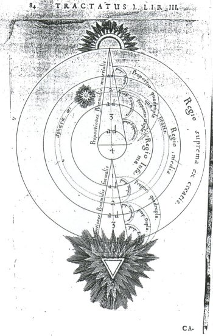afb. 14
‘Pyramiden' (3) UCH I,i. p. 84 |
Allereerst vult Fludd de materiële kwart: ‘De
kwart is samengesteld uit drie intervallen, namelijk uit water, lucht en vuur.
Want de aarde heeft in de ‘wereld-muziek’ de plaats van de Gamma in
de muziek, de eenheid in de aritmetiek, en de punt in de geometrie; het is als
het ware de grens vanwaar de proportionele verhouding van de materie wordt
afgeleid, daar het immers de basis en het fundament van de materiële
pyramide is. Zo bezit water de plaats van één toon, en lucht het
volgende interval van één toon. De sfeer van het vuur echter,
omdat deze slechts de top van de lucht-regio is, bezit de plaats van een halve
toon.’(33)
Dan volgt de materiële kwint, gelegen tussen maan en zon: ‘Het
verschil tussen maan en zon is zo groot, omdat er tussen de bolvorm van deze
hemel (de ondergrens) en het midden van de sfeer van de zon vier intervallen
zijn, namelijk de volledige sferen van maan, mercurius en venus vergeleken met
hele tonen en het halve deel van de sfeer van de zon, dat wij uit een halve
toon hebben samengesteld.’(34)
Op deze wijze ontstaat uit kwart en kwint het materiële octaaf.
In het midden bevindt zich de zon. Precies daar zijn materia en
forma in evenwicht, immers beide bestaan daar uit twee delen. De
verbinding tussen beide delen in de zon is zodanig hecht volgens Fludd dat zij
nooit gescheiden kunnen worden (punctum exactae aequalitatis (de
zon), quod est exacta duarum pyramidum intersectio, nempe N.H. (zie afbeelding 11) est verus consonantiae magis perfectae
terminus, ubi talis est unio et amplexus materiae cum forma, ut nunquam fieri
possit separatio et divisio.(35)).
Hier ook houdt het materiële octaaf op en begint het
formele (ook ‘spirituele’ geheten). Beneden en boven de zon (de
sphaera aequalitatis) bevindt zich een kwint. De sterrenhemel (coelum
Aethereum) bestaat dus uit twee kwinten, één in het
materiële en één in het formele octaaf, hetgeen voor deze
plaats meer geschikt is dan voor alle andere consonanten, want deze hemel,
hoewel zij vrij is van verandering (corruptio), is toch minder perfect
dan de perfecte hemel (‘Empyreum’), maar meer perfect dan de
imperfecte hemel (‘Elementa’). Vanwege de kwinten waaruit de
middelste hemel bestaat is de materie waaruit zij bestaat volgens Fludd door de
filosofen wel Quinta essentia genaamd.(36)
De bovenste kwint echter (Diapente formalis) is meer edel dan de
onderste, want deze bestaat immers meer uit vorm dan uit materie: ‘Want
het deel van de middelste hemel, boven de sfeer waar de driehoeken elkaar
snijden (waar het centrum van de zon is), tot aan de kristallijnen regio, is
meer spiritueel dan het onderste deel wegens zijn verwantschap met het
Empyreum. En vandaar is ook de consonant die daar ontstaat spiritueel.’(37)
Hier is ook plaats voor vier intervallen, namelijk een halve toon voor de zon
(de helft van de sfeer van de zon, die in het formele octaaf ligt: Ex una
namque orbis solaris portione, superior nempe, ab intersectionis pyramidalis
sphaera (...) invenitur illud intervallum, quod Semitonio minori comparatur
(...).(38)). Door de baan van de
zon onder en boven het middelpunt een halve toon te geven ‘wordt de baan
van de zon, het vehikel van de ‘ziel van de wereld’ door gelijke
gewichten in evenwicht gehouden.’(39) De sfeer van mars, jupiter en saturnus krijgen elk een
hele toon, vanwege hun eigen natuur.(40)
Op dit moment begint Fludd als het ware overnieuw met de samenstelling van het
spirituele octaaf, hij schrijft namelijk: ‘Boven deze minder perfecte
consonant strekt zich de meest perfecte consonant van allemaal uit, het formele
octaaf. En in deze plaats zal een goddelijk mysterie zich onthullen aan
diegenen die dit mysterie overdenken.’(41) Dit mysterie bestaat allereerst in het gegeven dat het
spirituele octaaf meer edel is dan het materiële, onder andere omdat de
onedele aarde de basis is van het materile octaaf. De basis van het formele
octaaf is echter de zon. Ten tweede, zo zegt Fludd, de fundamentele consonant
van het materiële octaaf is de kwart, van het spirituele octaaf echter de
kwint, hetgeen een concordantia nimirum perfecta is (‘een
onbetwijfelde perfecte consonant’).(42)
Het echte mysterie (dat Fludd onthult) is ‘dat alle
graden van de materiële dingen als in een spiegel kunnen worden gezien,
vanwaar ook de sprirituele ladder en orde aan de ogen van het intellect
gemanifesteerd worden. Al het ontstaan (generatio) geschiedt beneden de
zon en ontvangt zijn kracht van de onderste halve toon van de zon. Maar
opwekking (regeneratio) heeft zijn oorsprong van de bovenste halve toon
van de zon, waarvandaan verheffing plaats vindt tot de grens van het
spirituele. De dingen die niet tot aan de zon uitstrekken, zij kunnen de
opwekking niet verkrijgen. Gezegend zijn derhalve die lichamen aan wie het
toegestaan wordt zulke hoogte en waardigheid te bereiken.’(43)
Naar mijn mening bedoelt Fludd met deze gezegende lichamen de mens, wiens geest
en ziel het vermogen heeft tot zulke hoogten op te stijgen en zo opwekking
(verlossing) te ontvangen op voorspraak van de zon (die bij Fludd tevens
anima mundi is). Geen wonder dat Mersenne zich over deze
‘ketterse’ ideeën zo opwond, want van verlossing door
middeling van Christus (een blijkbaar nogal belangrijk punt) is geen sprake
meer.
Hierna vult Fludd de formele kwart. De drie delen van het
licht die de meest fijne stof vormen, waarin haast geen materie voorkomt
(hetgeen de natuur is van het Onveroorzaakt licht), verhouden zich als een
kwart, de Diatessaron formalis. Deze wordt in drie intervallen verdeeld
en aan de drie Hiërarchieën(44) toegeschreven. De laagste twee orden ontvangen een hele
toon, de hoogste orde echter een halve, omdat zij, met name de Seraphim, Gods
helpers zijn (DEO administrantes). Vooral deze laatste groep begeeft
zich buiten de grenzen van het materële (het ene deel materia dat
nog in de hoogste hemel aanwezig is) en is vrijwel geheel formeel vanwege de
luister (splendor) die zij van de Goddelijke aanwezigheid ontvangen.(45)
Hiermee zijn zowel het materiële als het formele octaaf voltooid. Het
formele octaaf is het uiterste punt van hoogste perfectie, van verhevenheid en
puurheid van de wereld, waarbuiten God alleen bestaat, de enige en allene
(Est igitur (formele pyramide) summum totius perfectionis,
altitudinis et puritatis mundanae fastigium, ultra quod nihil praeter unicum et
solum DEUM existit.(46)).
Maar tussen de grens van de hoogste hemel (en dus God) en de wereld bestaan nog
verdere verbanden, namelijk een dubbeloctaaf (4:1)(47); en uit de afbeelding van het monochord (13) blijkt dat
er nog een verhouding bestaat, namelijk een duodecim (octaaf plus kwint) tussen
de grens van de middelste hemel en de aarde, deze volgt natuurlijk uit de
weergegeven verhoudingen.
Na deze lange uitleg van het
‘Wereld-monochord’ vervolgt Fludd met een ander instrument (een
soort van harp zie afbeelding 15(48)), in de vorm van een driehoek (pyramide), dat eveneens
dient om zijn verhaal kracht bij te zetten en waarop dezelfde noten tot klinken
worden gebracht als op het ‘Wereld-monochord’. Met de fysieke
beperking ervan demonstreert Fludd nogmaals de onkenbaarheid van het
allerhoogste, want ‘... boven de hoogste (noot) stijgen is niet minder
onmogelijk, dan voorbij de eenheid in de aritmetica of de punt in de geometria
te gaan.’ ((...) ultra quem altius ascendere non minus erit
impossibile, quam ultra Aritmeticam unitatem aut punctum Geometricum
progrediendo penetrare.(49)).
Ook de fluit (fistula) dient tot dit doel (zie
afbeelding 16). Zij is in drie delen verdeeld: twee lagere regionen die drie
openingen hebben, de helft bij het mondstuk representeert het formele deel, het
andere het materiële (de gaten beelden begin, midden en einde uit); en het
grote gat, de hemel boven de hemel, welk deel van dezelfde oorprong is als de
meest volledige goddelijke eenheid ((...) suprema vero regio unico tantum
magno foramina constans designat naturam coeli super coelestis, cujus quaelibet
pars ejusdem est conditionis tanquam repletissimae unitate divina.(50)). | | 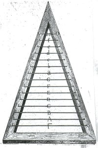afb. 15 ‘Harp'
UCH I,i. p. 92 |
| 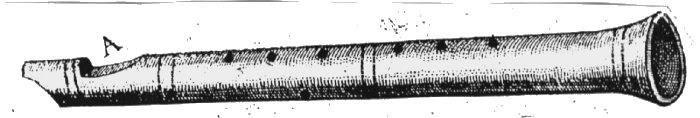 afb. 16 ‘Fluit'
UCH I,i. p. 94 | | Als de fluit niet wordt aangeblazen zal deze ook niet klinken,
net zoals de wereld of delen van de wereld niet klinken wanneer deze niet door
een geweldige geest daartoe worden aangezet. Zodat derhalve de hoogste geest,
God, op de hoogste top van de wereld en schijnbaar buiten de hoogste grens van
de wereld, heeft beschikt dat de samenvoegingen van de wereld zijn muziek
veroorzaken, lagere tonen in de inferieure delen, en hogere en heldere, die
hierdoor meer en dichterbij de hoogste top raken.(51) |
Op de fluit, zo zegt Fludd, geldt hetzelfde: de lage tonen
klinken verder weg van het mondstuk en de hoge dichterbij. Zo wordt het beeld
van de fluit en diens bespeler door Fludd gebruikt voor God als fluitist van
zijn wereld, de wereld die zo doorstroomd word met God’s adem
(spiritus, pneéma, ruach(52)).
Op bovenstaande wijze brengt Robert Fludd zijn volledig
geordend en volkomen van God vervulde en afhankelijke universum tot stand, een
universum waarin de mens niet dan door God zelf levend en her-levend wordt
gemaakt.
De toonladder die al deze gradaties uitdrukt ziet er als volgt uit:
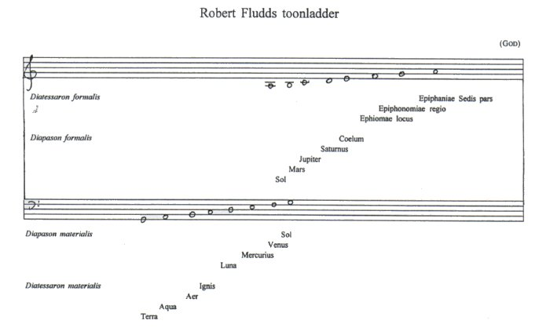
Zo worden in bovenstaande toonladder zowel het Christelijke
idee van een God lofzingende hemel als de Griekse harmonia, die in alles
op aarde aanwezig is, verenigd.
III
Hiermee is tevens mijn bespreking van Fludd’s
opvattingen omtrent de musica mundana ten einde, na het derde hoofdstuk
over de musica mundana en het vierde over de fistula, vervolgt Fludd
zijn betoog met een poging de geschetste musica mundana te bewijzen.(53) Dit onderneemt hij door middel van
de astrologie, maar zoals ik al eerder opmerkte, dit betoog is niet essentieel
voor een begrip van Fludd’s opvattingen. Ik zal deze dan ook onbehandeld
laten.(54) Ook treft men een een
betoog aan waarin Fludd op vergelijkbare wijze als besproken gedeelte de
musica elementaris nader bespreekt. De twee octaven en de overige
intervallen, tezamen met de pyramiden, worden in dit betoog naar de wereld van
de elementen overgebracht, maar aangezien dit gedeelte(55)geen nieuwe ontwikkelingen bevat, wil ik ook dit
onbesproken laten. Voor de volledigheid echter verwijs ik naar afbeelding 17,
waar men de afbeeldingen aantreft waarmee Fludd zijn betoog in deze
onderstreept.
Een ander punt zijn de fouten die Fludd zich permitteert bij
de constructie van het monochord (afbeelding 10). Hoewel men geheel boven de
afbeelding de zinsnede aantreft dat ‘... verhoudingen, consonanten en
intervallen naar waarheid zijn aangebracht’ ((..) monochordum mundanum
cum suis proportionibus, consonantiis et intervallis exactius composuimus
(...).(56)), is toch die
samenstelling weinig exact. Want de plaatsing van de intervallen op het
monochord is niet conform de verdeling zoals men die op een reëel
monochord zou kunnen aantreffen. Kwinten, kwarten en losse tonen zijn door
Fludd volgens zijn eigen metafysische wetten op het monochord aangebracht, niet
volgens de akoestische.(57) De
kwinten zijn bijvoorbeeld te klein en de kwarten te groot, maar ook de overige
intervallen zijn onjuist weergegeven.
Overigens, in het later verschenen Monochordum mundi
(appendix bij Anatomiae Amphitheatrum. Frankfurt, 1623), geeft Fludd wel
de juiste verhoudingen aan op het monochord. Een opmerkelijk verschil in deze
herziene versie is dat God nu de laagste toon (C) ontvangt en de aarde
(Terra) de hoogste (c3); de gebruikelijke hoog-laag volgorde is nu
afwezig. Kort gezegd, wat Fludd ook probeert, zijn ideeën komen niet
overeen met de werkelijkheid (zie afbeelding 18).(58)
Maar niet alleen zijn de verhoudingen onjuist, ook de
intervallen zelf zijn onjuist weergegeven. Fludd spreekt in de tekst namelijk
over een halve toon voor de sfeer van de zon en een hele toon voor de sfeer van
venus. In de afbeelding (10) is dit omgedraaid, er had eigenlijk een fis moeten
staan. Een andere halve toon geeft Fludd aan de sfeer van de zon en drie hele
tonen aan respectievelijk mars, jupiter en saturnus. In de afbeelding echter
heeft jupiter de halve toon b-c (juister was een toonladder van As geweest,
begonnen op de zevende trap G). Een laatste onjuistheid betreft de intekening
van de proportio sesquialtera in de materiële kwint (afbeelding 10,
links), die doorgetrokken is tot Aqua (hetgeen een kleine septiem is en
geen kwint). In tegenstelling tot de overzijde, waar de kwint wel juist is
afgetekend.
Afbeeldingen
| 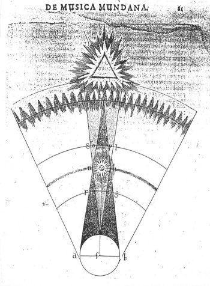afb. 11
‘Pyramide'UCH I,i. p. 81 | | 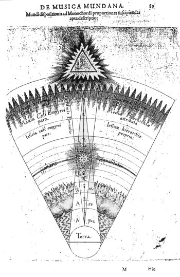afb. 12
‘Pyramide' (2) UCH I,i. p. 84 |
| 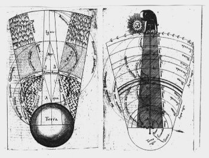 afb.
17a/b ‘Pyramide (4) en monochord'(2) UCH I,i. p. 96 en
100 |
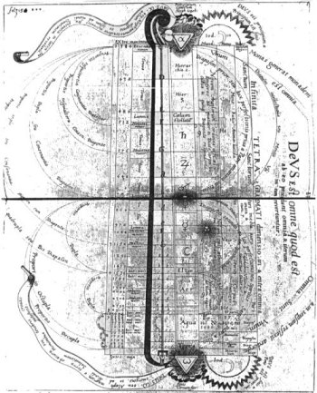 afb. 18
‘Monochord'(3) uit: Robert Fludd, Anatomiae Amphitheatrum.
Frankfurt, 1623. p. 314-315 |
1. De onjuistheid van
Fludd’s monochord verdeling speelt Mersenne (Traité de
l’harmonie universelle. Paris, 1627. p. 442 e.v.) enorm tegen Fludd
uit. Zie voor een weergave van Mersenne’s uitbrander: Peter Dear,
Mersenne and the Learning of the Schools. p. 111 e.v. (terug naar tekst)
2. Mersenne
wond zich vreselijk op over zowel Fludd’s pantheisme (zie lopende tekst)
als over de gelijkschakeling door Fludd van de (heidense) anima mundi
(`ziel van de wereld’) met God, waardoor met name de noodzaak tot
Verlossing door Christus in het gedrang zou komen. Zie Robert Lenoble,
Mersenne ou la naissance du méchanisme. p. 368 (terug naar tekst)
3. Voor
vindplaatsen hiervan, zie Peter J. Ammann, `The musical theory and philosophy
of Robert Fludd’ loc. cit. p. 201 (terug naar
tekst)
4. UCH. I, i. p. 79 (terug naar tekst)
5. Johannes
Kepler zal ongeveer hetzelfde zeggen, zie hoofdstuk 3, pagina 86 (noot 88)
(terug naar tekst)
6. Bij
Athanasius Kircher vindt men dezelfde ideeën over God als instrumentalist
in, en van, zijn schepping, zie p. 101 - verdere verwijzingen aldaar. (terug naar tekst)
7. UCH.
I, i. p. 85 (terug naar tekst)
8. Athanasius Kircher gebruikt dezelfde pyramides om de strutuur van de
wereld weer te geven, zie hoofdstuk 4, p. 97. (terug naar
tekst)
9. In feite is I, i., net als Athanasius
Kircher’s tiende boek Decachordon naturae - zie hoofdstuk 4, - een
Genesis-commentaar: een bepaalde auteur (in dit geval Fludd) gebruikt het
scheppingsverhaal als vehikel om zijn opvattingen over de creatie en de
structuur van de wereld te bespreken. Fludd bespreekt zijn opvattingen over de
schepping in boek I en II van UCH (I, i. I en II). Deze praktijk was
gedurende de 16de en 17de eeuw bijzonder populair, er zijn talloze
Genesis-commentaren uit deze periode (de één meer correct volgens
de kerkleer dan de andere), zie hierover (en over Fludd’s opvattingen
omtrent de schepping) ook: Robert S. Westman, `Nature, art and psyche: Jung,
Pauli, and the Kepler-Fludd polemic’ loc. cit. p. 191 e.v.; of,
enkel over Fludd’s ideeën omtrent de schepping, William H. Huffman,
Renaissance. pp. 106-110. Voor een weergave van de diverse illustraties
die Fludd gebruikt bij zijn verhaal over de schepping, zie Joscelyn Godwin,
Hermetic. pp. 24-33 (pyramides: pp. 42-53) (terug
naar tekst)
10. UCH. I, i. I p. 24:
`Materia seu subjectum, in cujus gremio maximus ille noster Macrocosmi
opifex structuram suam disposuit, est Philosophica illa _((; quam physici
materiam absolute primam vocaverunt (...).’ (terug naar tekst)
11. Ibid. p.
23: `Ingens oritur inter Philosophos recentiores dissensio de primae
creationis materiae origine; quorum major chorus ipsam creatam esse
asseveranter dicit: inter quos Artesius his fere verbis utitur: `Creator omnium
in principio absque sermonis prolatione dixit; Fiat creatura talis et postea
creata est a DEO ipsa natura sive materia prima.’ Alter vero chorus
minor, de quo participiat Paracelsus cum reliquis suae scholae, materiam hanc
vocat mysterium magnum, quod creati nullius similitudo habuit, nec etiam
creatum fuit, sed solummodo ab altissimo opifice DEO praeparatum.’
(terug naar tekst)
12.
Ibid. p. 24 (terug naar tekst)
13. Ibid. p. 24 e.v. (terug
naar tekst)
14. Ibid. p. 80: `Sed
pyramidis formalis basis est ipsi coelo Trinitatis contigua, ejus conus ad
terram usque se extendit, quemadmodum e converso basis pyramidis materialis est
in terra, ejusque conus usque ad coeli Empyrei verticem ascendit
(...).’ De formele pyramide is verbonden met het licht, de
materiële met de duisternis, zie de afbeeldingen; maar zie ook UCH.
II, ii. pp. 179-191: portio VII `De speculativa pyramidum metaphysicae et
physicae scientia’, hetgeen speciaal aan deze pyramide-theorie gewijd is.
Maar zie ook UCH. I, i. I pp. 26-27; of de literatuur: Joscelyn Godwin,
Hermetic. p. 13 e.v.; William H. Huffman, Renaissance. p. 106
e.v.; Peter J. Ammann, `The musical theory and philosophy of Robert
Fludd’ loc. cit. p. 200; en Robert J. Westman, `Nature, art, and
psyche: Jung, Pauli and the Kepler-Fludd polemic’ loc. cit. p. 194
e.v. (terug naar tekst)
15. UCH. I, i. III p. 80 (terug naar
tekst)
16. Ibid. p. 85 (terug naar tekst)
17. Hoewel
God onbeschrijfbaar en onbegrijpbaar is kan hij toch op drie manieren gekend en
`aanwezig’ gemaakt worden, namelijk door de menselijke vorm (forma
humana), omdat God immers de mens naar zijn beeld schiep (Genesis 1); door
de figuur van de zon (in figura solis), want zoals God bron van alle
licht voor de gehele wereld is (ook de spirituele), zo is de zon bron van
warmte en licht voor de materiële wereld. De zon is de meest zichtbare
manifestatie van God. Ten derde door de vorm van de driehoek, waarvan de drie
zijden gelijkstaan met de Drieëenheid (afbeelding 16 en 17). Zie
UCH.I, i. I pp. 17-21; voor een afbeelding van de zon als Goddelijk
principe, zie ook Joscelyn Godwin, Hermetic. p. 20 (terug naar tekst)
18. A.
Szekeres, `Pantheisme’ Christelijke Encyclopedie. Kampen, J.H. Kok
N.V., 1960. 5. p. 382. Wat betreft de Gnosis, naar mijn mening is het religieus
Hermetisme, waarvan Fludd’s werk doordrongen is (Zie Frances A. Yates,
Giordano Bruno and the Hermetic tradition. p. 403 e.v. maar zie ook noot
55 omtrent Fludd’s bronnen) ook een vorm van Gnosis. Hoewel het
Hermetisme niet Christelijk van oorsprong is, toch is het uit dezelfde periode
(eerste eeuwen na Christus) afkomstig, en van dezelfde
pythagoreïsch-platonische geest doordrongen; een ongeveer vergelijkbare
situatie doet zich voor met de inhoud van bijvoorbeeld het bijbelboek Wijsheid
(zie hoofdstuk 4, p. 90). (terug naar
tekst)
19. Hetgeen een citaat is naar I
Corinthiërs 15:28 `opdat God zij alles in allen’ (NBG vertaling).
De Vulgaat echter geeft op deze plaats: ut sit Deus omnia in omnibus;
het Griekse nieuwe testament: ἴνα ἤ ό θεὸς πάντα ἐν πάσιν.
Grammaticaal gezien kunnen beide zowel `alles in alles’ alswel `alles in
allen’ betekenen. De eerste optie is vanwege haar pantheistische karakter
niet in de NBG (of Willibrord) opgenomen, wèl echter is zij de juiste
versie in Fludd’s ogen. Zie ook William H. Huffman, Renaissance.
p. 109: `A vital aspect of Fludd’s universe was the idea that God is `all
in all’ (hoe prachtig ambigu) (I. Cor. 15:28), that is, the divine spirit
not only brought about the created universe, but continues to bring sustenance
and multiplication to all levels of being.’ Er is een voortdurende
heilbrengende aanwezigheid van God in de wereld, Fludd echter gaat in wezen nog
verder dan Huffman het doet voorkomen, want God is daarnaast ook nog op een
speciale wijze aanwezig in zijn schepping (zie lopende tekst). (terug naar tekst)
20.
UCH. I, i. I p. 17 (terug naar tekst)
21. Ibid. p. 22 (terug naar
tekst)
22. Maar zie ook UCH. I, i. I
pp. 17-21 (terug naar tekst)
23. Ibid. p. 88 (terug naar
tekst)
24. Ibid. p. 85: `mundi materia
(...) quam chordae monochordi, cujus instrumentum magnum est ipse Macrocosmus
(...).’ (terug naar tekst)
25. Ibid. p. 85 (terug naar
tekst)
26. Ibid. p. 79 (vgl. noot 86).
(terug naar tekst)
27.
Ibid. p. 85 (terug naar tekst)
28. De zon fungeert in Fludd’s denken op bijzondere
wijze als middelpunt, want Fludd is in zijn fysica namelijk een geocentrist,
maar in zijn metafysica een heliocentrist. Zie hierover verder Allen G. Debus,
`The Sun in the Universe of Robert Fludd’ Le soleil à la
renaissance. Bruxelles, Presses universitaires de Bruxelles, 1963. II. pp.
226-277 (terug naar tekst)
29. UCH. I, i. III p. 82: `(...) invenimus sphaeram aequalitatis
totius mundi, et ipsius animae mediae locum, in quo lux increata tabernaculum
suum posuit, animamque mundi collocavit: Imo haec sphaera aequaliter a parte
tum superiore tum inferiore perfectionem consonantiae magis perfectae recepit;
nam ab ipsa ascendit Diapason spitiruale et ad ipsam ascendit Diapason
materiale; In dupla enim proportione se habit ad terram, et ad locum et sedem
formae simplicissimae: In ejus ergo regione consonantiae perfectissimae musicam
vitalem producunt; cujus monochordi spiritualior pars, si pulsetur, vitam
aeternam dabit, materialior autem pars transitorium.’ (terug naar tekst)
30.
Ibid. p. 82 (terug naar tekst)
31. Wat betreft de licht pyramide schrijft Fludd ongeveer
hetzelfde (UCH. I, i. III p. 83: `(...) etiam ipsius formalis
pyramidis proportiones oriuntur a majori aut minori praesentia vel absentia;
nam ejus fons (de basis bij God) (...) nullam materiae portionem in se
habeat, ac proinde cognoscitur ex quatuor caliditatis quartis (...)
constare.’ (terug naar tekst)
32. Fludd schrijft het volgende over bijvoorbeeld de de
kwart (de overige intervallen van beide pyramides handelt hij net zo af, zie
UCH. I, i. III pp. 82-83): `... de verhouding tussen de aarde en de
onderste regio is duidelijk, omdat de aarde vier getuigen van zeer grote
dichtheid heeft (4 elementen materie), de regio van de elementen heeeft niet
meer dan drie duidelijke (getuigen),; inderdaad zo, dat zij de verhouding van
een kwart hebben (...) zoals 4:3.’ ((...) proportionem inter terram et
infimam illam regionem esse perspicuam, cum terra habeat quatuor spissitudinis
testimonia, regio autem elementaris diaphana non nisi tria; ita sane, ut in
proportione sesquitertia sese habeant (...) ut 4 ad 3.) (terug naar tekst)
33.
UCH. I, i. III p. 86: `(...) consonantia Diatessaron consistit ex
tribus intervallis constatum, nempe ex aqua, aëre et igne: Nam terra in
musica mundana se habet, ut ( in musica, unitas in Aritmetica et punctum in
Geometria: Et enim quasi terminus, a quo ratio materiae proportionalis habenda
est, quippe cum materialis pyramidis basis et fundamentum sit: Aqua igitur
locum toni unius possidebit, et aër etiam unius intervalli ulterioris:
Ignis autem sphaera, quoniam est non nisi summitas regionis aëris accensa,
locum Semitonii minoris habet.’ (terug naar
tekst)
34. Ibid. p. 86: `Talis enim est differentia inter
lunam et solem, cum inter convexitatem hujus coeli et medietatem sphaerae solis
quatuor sint intervalla, nempe integrae lunae, Mercurii et Veneris sphaerae,
integris tonis comparatae, et dimidia solaris sphaerae pars, quam Semitonio
composuimus.’ (terug naar tekst)
35. Ibid. p. 86 (terug naar
tekst)
36. Ibid. p. 86 (terug naar tekst)
37. Ibid. pp.
86-87: `Pars namque coeli medii superior a sphaera intersectionis
triangulorum, in qua solis centrum existit, ad regionem cristallinam recedens
spiritualior est illa inferiori propter suam cum coelo Empyreo propinquitatem;
Unde et consonantia inibi producta est quoque spiritualis (...).’
(terug naar tekst)
38.
Ibid. p. 87 (terug naar tekst)
39. Ibid. p. 87: `(...) in qua centrum corporis solaris,
animae mundi vehiculum, libratis ponderibus suspenditur.’ (terug naar tekst)
40.
Ibid. p. 87 (terug naar tekst)
41. Ibid. p. 87: `Super hanc igitur consonantiam
spiritualem minus perfectam fundatur consonantia illa omnium perfectissima, qua
dicitur Diapason spirituale. Atque hoc loco diligenter rem intuentibus divinum
sese revelabit mysterium (...).’ (terug naar
tekst)
42Ibid. p. 87 (terug naar tekst)
43Ibid. p.
87: `Hinc igitur gradus materialem omnium; tanquam in speculo conspiciuntur;
atque inde etiam oculis intellectus scala et ordo spiritualis manifestatur.
Generationes igitur omnes sub sole fiunt vimque suam ab inferiori solis
sphaerae semitonio minori, quod materiale supra appellavimus, accipiunt; At
vero regenerationes omnes a Semitonio orbis solaris superiori ortum habent, a
quo ad spiritualitatis summitatem sit sublimatio. Proinde quae ad orbis solaris
fastigium non pertigerunt, ea non possunt acquirere regenerationis
perfectionem, nec fieri spiritualia ex corporalibus. Beata igitur corpora,
quibus ad tantam celsitudinem et dignitatem pervenire licet.’ (terug naar tekst)
44. Fludd
noemt deze drie Hiërarchieën met hun Griekse naam (van hoog naar
laag): Epiphaniae (`Verschijningen’), Epiphonomiae (`Stemmen’) en
Ephinomiae (`Uitroepen’) - zie afb. 10: linksboven Epiphaniae Sedis
pars etc., - de hoogste groep van de hoogste orde noemt hij bij naam:
Seraphim. De drie Hiërachieën komen overeen met de drie orden van
(pseudo) Dionysius: hoogste orde: Seraphim, Cherubim en Troni; middelste orde:
Dominationes, Principatus en Potestates; laagste orde: Virtutes, Archangeli en
Angeli. Zie ook afbeelding 6 of hoofdstuk 1. (terug naar
tekst)
45. Ibid. pp. 87-88 (terug naar tekst)
46.
Ibid. p. 88 (terug naar tekst)
47. Ibid. p. 88 (terug naar
tekst)
48. Voor andere fantastische
instrumenten in UCH zie Joscelyn Godwin, `The instruments in Robert
Fludd’s ``Utriusque cosmi ... historia’’ Galpin Society
Journal 26 (1973): pp. 2-14 (terug naar
tekst)
49. Ibid. p. 91 (terug naar tekst)
50.
Ibid. p. 95 (terug naar tekst)
51. Ibid. p. 95: `At vero sicut hoc instrumentum (de
fluit) in sua natura et per se sine anima (muzikant) movente non
sonat, movetur, aut quicquam virtutis habet; sic etiam nec mundus aut mundi
partes movere vel agere per se possunt sine mentis immensae exagitatione: Ut
igitur mens summa DEUS in totius machinae apice, et quasi extra superficiem
mundi extremam, facit mundi compagines exhibere musicam suam, graviorem in
parte inferiori, et acutiorem ac clariorem, quo magis et propinquius ad ipsam
summitatem accedunt (...).’ (terug naar
tekst)
52. Zie hoofdstuk 4 xxxx (terug naar tekst)
53.
Ibid. pp. 101-102 (terug naar tekst)
54. Zie hierover verder Peter J. Amman, `The musical theory
and philosophy of Robert Fludd’ loc cit. p. 204 (terug naar tekst)
55.
UCH. I, i. III pp. 95-100 (terug naar
tekst)
56. Ibid. p. 90; maar zie ook
afbeelding 13. (terug naar tekst)
57. Zowel Horst Atteln (Verhältnis p. 116) als
Peter J. Amman (`The musical theory and philosophy of Robert Fludd’
loc. cit. p. 202) merken dit op. (terug naar
tekst)
58. Zie over deze tweede versie van het
`Wereld-monochord’ ook: Peter J. Ammann, `The musical theory and
philosophy of Robert Fludd’’ loc cit. p. 224 e.v. Return
to (terug naar tekst)
|